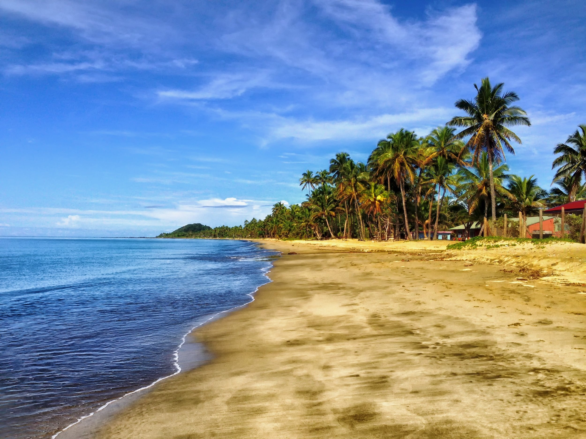
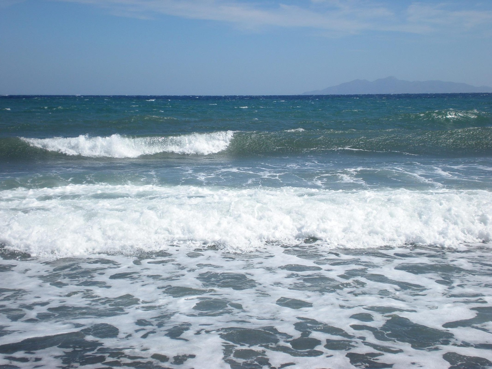
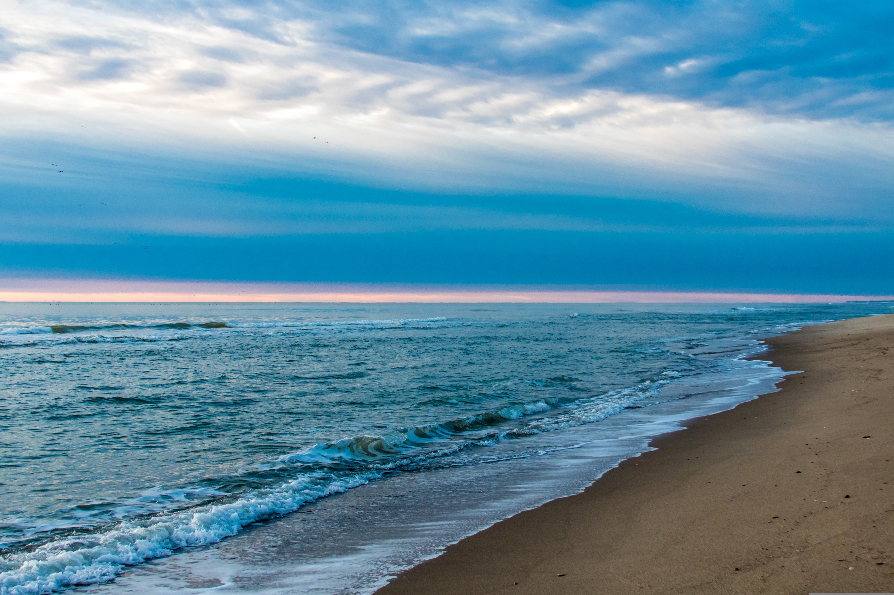

Die Strände von Santorini gehören zu den faszinierendsten Küstenlandschaften der Ägäis und machen die Insel zu einem besonderen Reiseziel für Strandliebhaber. Statt klassisch weißem Sand erwarten Besucher hier eindrucksvolle vulkanische Strände mit schwarzem, manchmal auch rötlichem oder sogar gräulichem Sand, der durch die geologische Vergangenheit der Insel entstanden ist.
Besonders bekannt ist der Red Beach, der mit seinen steilen roten Felswänden und dem kontrastreichen türkisblauen Wasser eine fast surreale Kulisse bietet. Ebenso beliebt sind die langen Strände von Kamari und Perissa, die mit ihrer guten Infrastruktur, Strandbars und Liegen ideal für entspannte Urlaubstage sind. Hier lässt sich die Sonne der Ägäis besonders gut genießen.
Trotz ihrer unterschiedlichen Charaktere haben alle Strände eines gemeinsam: das klare, tiefblaue Meer und die beeindruckende Vulkanlandschaft im Hintergrund. Diese einzigartige Kombination aus Natur, Farben und Licht macht das Baden und Entspannen auf Santorini zu einem unvergesslichen Erlebnis.
Strand-Galerie


